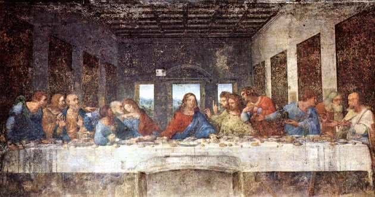

¿Qué es?
El Renacimiento fue un importante movimiento artístico y filosófico que se caracterizó por un redescubrimiento de la cultura grecorromana y la filosofía clásica. Se originó en Italia a fines del siglo XV y estuvo inspirado en el humanismo, un movimiento que antepuso al ser humano y la razón por encima de las creencias religiosas.
El movimiento renacentista propició importantes avances científicos e invenciones, como la teoría heliocéntrica de Nicolás Copérnico (que proponía el Sol como centro del universo, en lugar de la Tierra) y la imprenta, desarrollada por Johannes Gutenberg en 1440.
Con el Renacimiento, la razón como facultad propia del ser humano pasó a ser el nuevo objeto de veneración. Este cambio cultural, junto con la invención de la imprenta, permitió difundir de manera masiva textos que promovían la cultura y los valores grecorromanos, centrados en la experiencia humana.
El Renacimiento fue un período de transición entre la Edad Media y la Moderna. Sus cambios, introducidos de manera progresiva y sostenida, impactaron significativamente en todos los ámbitos de la vida. Para los pensadores de la época, representó un “nuevo nacimiento” del saber, tras un largo período de control del conocimiento por parte de la Iglesia católica.
Características del Renacimiento
La recuperación de la Antigüedad clásica. El Renacimiento volvió sobre ideas, valores y principios filosóficos, científicos y artísticos de la Antigüedad grecorromana, como el antropocentrismo y el interés por comprender y representar los fenómenos naturales.
La revolución científica y cultural. El desafío a las ideas establecidas fue uno de los mayores aportes del Renacimiento. En este sentido, se destacan las teorías del astrónomo Nicolás Copérnico y del físico Galileo Galilei, como el heliocentrismo, además del método científico, con el que Galileo logró demostrar sus planteamientos.
El auge de los descubrimientos. Grandes innovaciones como la imprenta, las rutas marítimas y la conquista de nuevos continentes despertaron una gran curiosidad y la disposición a conocer y explorar.
La valoración del racionalismo. El dogma cristiano fue cuestionado y creció el interés por adquirir nuevos conocimientos que se basaran en la razón para explicar los fenómenos de la realidad.
La inspiración en el humanismo. El hombre se consideraba el centro del universo y el fin último de la Creación. El Renacimiento dejó de lado el teocentrismo (la idea de Dios como centro de todas las cosas), aunque se mantuvo la creencia en su figura.
La valorización de la naturaleza. Los artistas mostraron un gran interés por la naturaleza y por la representación perfecta del cuerpo humano, que fue un elemento recurrente en la pintura y la escultura.
La importancia del arte. Como creación humana, el arte resultó para el Renacimiento una actividad central y muy valorada. En este contexto, surgió la noción de genio, que se refería a la facultad divina de ciertas personas para crear obras de gran valor estético.
La diversificación de las temáticas. La apertura hacia el arte y el surgimiento de una nueva élite económica dispuesta a financiarlo dio lugar a la aparición de temáticas distintas a la cristiana, como los paisajes y retratos. También se exploraron la mitología y las alegorías grecorromanas.
Pintura y escultura del Renacimiento
La pintura del Renacimiento se nutrió de la invención de la perspectiva lineal, una técnica que permitía crear la ilusión de profundidad sobre superficies planas. La representación del cuerpo humano buscaba reproducir formas anatómicamente perfectas y proporcionadas. Los artistas empleaban juegos de luces y sombras para generar volumen y un alto grado de detalle.
La escultura renacentista tuvo predilección por el movimiento y la perfección anatómica, y empleó materiales como el mármol y el bronce, con un tratamiento minucioso y detallista. Las temáticas, influidas por el interés en la Antigüedad clásica y el humanismo, se centraron en escenas mundanas, mitológicas o de personajes religiosos humanizados. Otros temas importantes fueron los retratos, las alegorías y la narrativa histórica.
Leonardo da Vinci y Miguel Ángel Buonarroti fueron los mayores representantes de la pintura y la escultura del Renacimiento.





EL NACIMIENTO DE VENUS
El cuadro El nacimiento de Venus o La nascita di Venere de Sandro Botticelli fue pintado entre los años 1482 y 1485, en pleno contexto histórico del Renacimiento. Se trata del primer cuadro en tela pintado en Tuscania, Italia. La obra mide aproximadamente 1,80 metros de alto y 2,75 metros de largo y se encuentra actualmente en el Museo Uffizi en Florencia, Italia.
El nacimiento de Venus se inscribe en la sensibilidad propia del Renacimiento, tiempo en que se renovó la representación de los mitos de la Antigüedad Clásica, en los cuales los renacentistas encontraban verdades escondidas sobre la naturaleza humana. Esto significó una verdadera defensa del humanismo antropocéntrico frente al teocentrismo del pasado.
MONALISA
La Gioconda fue elaborada por Leonardo entre 1503 y 1519. La tesis más aceptada sugiere que se trata de un encargo del mercader de telas Francesco del Giocondo. Como era común en da Vinci, nunca dio por concluido el cuadro, de manera que se negó a entregarlo y estuvo en su posesión hasta el final de sus días.
Solo después de su muerte, o quizá poco antes de morir, el cuadro fue adquirido por el rey Francisco I de Francia en pleno siglo XVI, quien llegó a pagar doce mil francos por ella. Tras la muerte de Francisco I, la obra fue destinada a Fontainebleau, luego a París y, por último, a Versalles. Después de la Revolución francesa, al considerarla parte del tesoro del Estado francés, fue entregada a la custodia del Museo del Louvre en 1797.
LA ÚLTIMA CENA
El historiador de arte Ernst Gombrich afirma que en esta obra Da Vinci no temió hacer la correcciones de dibujo necesarias para dotarla de total naturalismo y verosimilitud. Esto era algo poco visto en la pintura mural precedente, caracterizada por sacrificar deliberadamente la corrección del dibujo en función de otros elementos. Fue justamente esa la intención al mezclar la pintura al temple y el óleo.
En su versión de la última cena, Leonardo quiso mostrar el momento exacto en que Jesús declara la traición de uno de los presentes (Jn 13, 21-31). La conmoción se puede apreciar en el dinamismo de los personajes que, en lugar de permanecer inertes, reaccionan enérgicamente ante el anuncio.
Así, introduce este tipo de dramatismo y tensión entre los personajes, cosa nada habitual en el arte del periodo. De todos modos, el dinamismo no le impide lograr que la composición goce de gran armonía, serenidad y equilibrio, con lo que preserva los valores estéticos del Renacimiento.
LA LIBERTAD GUIANDO AL PUEBLO
Esta pintura fue realizada en 1830 por el artista francés Eugène Delacroix. Representa la Revolución de Julio de 1830 en Francia, un levantamiento popular que ocurrió en París contra el rey Carlos X. El pueblo se rebeló debido a decisiones del rey que limitaban la libertad de prensa y fortalecían el poder absoluto de la monarquía.
La obra muestra a una mujer que simboliza la Libertad, guiando al pueblo sobre las barricadas. Ella sostiene la bandera de Francia y avanza con firmeza, representando la lucha por los derechos y la justicia. A su alrededor aparecen personas de diferentes clases sociales, lo que simboliza la unión del pueblo en la lucha por la libertad.
Es una obra del Romanticismo, movimiento artístico que destacaba la emoción, el heroísmo y la lucha por ideales como la libertad.
CARLOS V Y EL FUROR
Esta escultura fue pintada en 1548 por el artista italiano Tiziano Vecellio (Tiziano). Representa al emperador Carlos V después de su victoria en la Batalla de Mühlberg (1547), cuando derrotó a los príncipes protestantes del Sacro Imperio Romano Germánico. En esa época, Europa estaba marcada por conflictos religiosos entre católicos y protestantes.
En la pintura, Carlos V aparece dominando al “Furor”, una figura que simboliza la violencia, el caos y la rebeldía. El emperador se muestra firme y victorioso, representando el orden y la autoridad. La obra transmite la idea de que el poder imperial controla el desorden y protege la unidad del Imperio.
Es una obra del Renacimiento que busca exaltar la figura del gobernante como líder fuerte y defensor de la estabilidad política y religiosa.